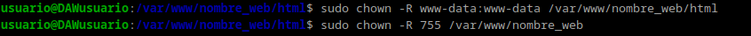
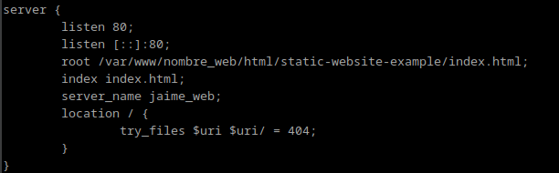
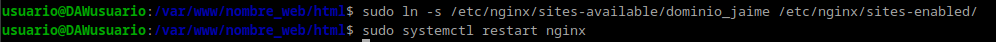
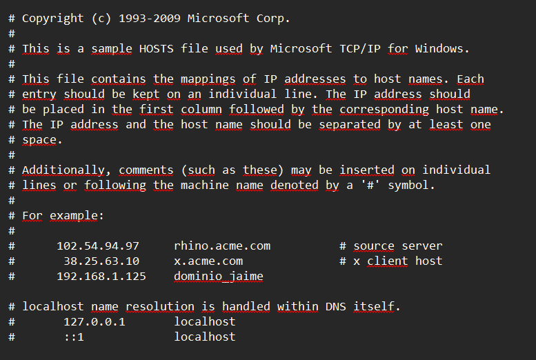

Practica 2
Ejercicio 2 de Despileges
Intalacion de Nginx
Para empezar la intalación pondremos en la terminal de comandos de nuestra maquina de Debian 12 el siguiente comando para actualizar los repositorios y otro para instalar nginx:
sudo apt update
sudo apt install nginx
Una vez intalado para ver si la instalacion se ha hecho correctamente escribiremos:
systemctl status nginx

Creacion de una carpeta para el sitio Web
Todos los archivos que nginx necesita para formar un sitio web se organizara en carpetas. Esta carpeta estara ubicada normalmente en /var/www.
Para crear esta carpeta usaremos mkdir:
sudo mkdir -p /var/www/nombre_web/html
En nuestro caso nombre_web podra ser el nombre del dominio que nosotros queramos.
Ahora dentro de la carpeta html deberemos clonar el repositorio: https://github.com/cloudacademy/static-website-example.
Aparte de eso cambiaremos los derechos sobre la carpeta para que el propietario sea www-data que normalmente es el usuario típico del servicio web. Con el siguiente comando y le daremos los permisos para que no haya errores:
sudo chown -R www-data:www-data /var/www/nombre_web/html
sudo chmod -R 755 /var/www/nombre_web

Ahora para ver si el servidor funciona podréis acceder correctamente desde vuestro cliente con http://ip-maq-virtual.
Configuración de servidor web NGINX
En Nginx hay dos rutas importantes. La primera de ellas es sites-available, que contiene los archivos de configuración de los hosts virtuales. La otra es sites-enabled, que contiene los archivos de configuración de los sitios habilitados, es decir, los que funcionan en ese momento.
Dentro de sites-available hay un archivo llamado default que es la pagina por defecto que se muestra en el servidor.
Para que NGINX nos presente el contenido de nuestra web, es necesario crear un bloque de servidor. En vez de modificar el archivo default para ello creamos /etc/nginx/sites-available/nombre_web con el siguiente comando:
sudo nano /etc/nginx/sites-available/vuestro_dominio
Y el contenido de dicho archivo sera:

Y crearemos un archivo simbólico entre este archivo y el de sitios que están habilitados, para que se dé de alta automáticamente y después reiniciaremos el servidor para aplicar la configuración:

Comprobaciones
Comprobación del correcto funcionamiento
Como todavia no disponemos de DNS que traduzca nuestras IPs, deberemos hacerlo manualmente. Para ello vamos a editar el archivo /etc/hosts de nuestra máquina anfitriona para que asocie la IP de la maquina a nuestro nombre_web.
En Linux el archivo que hay que editar es el antes mencionado pero en Windows es C:\Windows\System32\drivers\etc\hosts.
A este archivo hay que añardirle esta linea:
X.X.X.X nombre_web
donde X.X.X.X es la IP de la maquina virtual.

Comprobar registros del servidor
Para comprobar que las peticiones se están registrando correctamente en los archivos de logs, tanto las correctas como las erróneas:
/var/log/nginx/access.log
/var/log/nginx/error.log
Esto lo encotraremos en la maquina virtual.